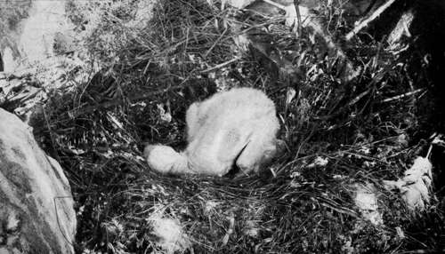
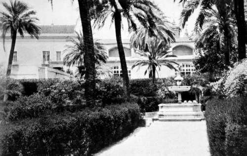

Birds'-Nesting In Spain. Part 6
Description
This section is from the book "Bird-Hunting Through Wild Europe", by R. B. Lodge. Also available from Amazon: Bird-Hunting Through Wild Europe.
Birds'-Nesting In Spain. Part 6
But we could see no signs of any Eagle's nest until I fired a pistol, when out swept, a few yards to our right, with a tremendous rustle of big wing-feathers, not the expected Eagle, but an immense Griffon Vulture.
Not one in ten of these goatherds, though they must see Eagles and Vultures every day of their lives, know the difference between them, so that, in spite of their willingness to give information, no dependence can be put upon its correctness.
The Griffon had appeared from a ledge not far down the precipice, and the next thing was to make an attempt to reach the spot. The guide went first to reconnoitre and was soon lost to sight ; but after a few minutes we could hear his hail and see his head over a rock corner. Shouting out that there were eggs, he directed us to make the best of our way down to where he was. Our path ran downwards in a slanting direction. The rock was composed of titanic boulders, many of them as big as a room in an ordinary house ; and from one to another of these we had to drop or make our way as best we could. Sometimes we were obliged to slide down a short incline, only to be brought up by the next obstacle ; but after a rough scramble all four of us found ourselves actually standing in the Griffon's nest.
I had been a little hampered by the heavy camera-case on my back and the strapped-up tripod carried in my hand, and was not sorry to find myself at last, with my photographic equipment uninjured, in this great nest, from which we enjoyed a magnificent view.
Looking straight down under our feet we could see, 1,000 feet below us, a tiny patch of yellow sand on which the little waves were lazily rolling ; while far away to the horizon the sea shimmered and shone in the glorious sunshine, with opalescent tints of blue, green, and purple, until lost in the blue sky above.
In the nest, which was very large and well made of sticks outside, with a finer lining of grasses and small stuff, was a young bird. This youngster, which was still in down, appeared to be in a very limp condition and unable to raise its body or even its head, but lay quite prone and prostrate in the bottom of the nest. Whether this was due to the heat or to an enforced fast of some duration it is, of course, impossible to say. It is well known that the adult Vultures, as indeed is the case with all birds of prey, can exist without food for an almost incredible number of days ; and that when they get the chance they make up for past shortcomings in one tremendous gorge. Of course even in Spain it must happen sometimes that the supply of carcases runs short for the enormous number of the great flesh-eating birds, which are entirely dependent on what dead bodies they can find-for they never kill anything for themselves. And if these times of scarcity happen in the spring, it follows that the young, as well as the adult birds, must sometimes be obliged to go without food for some time. Be this as it may, this young Griffon appeared to be in the last stage of exhaustion.
Young Griffon Vulture In Nest
Still lower down, on a ledge which we could only reach with our rope, were two more Griffons' nests, each of which held one great, round, white egg, and also the nest of an Egyptian Vulture, with two beautifully marked eggs of a rich reddish-brown.
This concluded a good day's work, for we had a long march home, where we arrived very tired and hungry, but very well satisfied with the results. One egg of Bonelli's Eagle, two eggs of Griffon Vulture, and two eggs of Egyptian Vulture, constituted a very good day's takings, without reckoning the Goldfinches' and other small eggs we had picked up accidentally on our way.
This was our last day's work in this locality, for we had arranged for our carriage to come out again from Algeciras to take us on to the railway between Cadiz and Jerez-de-la Frontera.
On the way we passed a great assemblage of Griffons hurrying at full speed from every point of the compass, and converging in hundreds in a field at a little distance from the road, where, no doubt, was a carcase in process of being devoured. There was no time to stop, however, for we had before us a journey of something like forty miles, and the certainty that if we missed our train we should have from twelve to twenty-four hours to wait. But for some distance as we drove along, belated birds passed us, all bound for the same spot.
This well illustrates their method, and explains why it is that so many congregate in so short a time in a spot where perhaps the keenest observer would fail to discover a single Vulture. They spend the day soaring in great circles at an immense height, from whence they can survey a great expanse of country. Nothing escapes their telescopic gaze, and at the first sight of a carcase the bird which first notices it descends. Other Griffons at varying distances see this descent, and, knowing exactly what it portends, also make for the same spot; and so it goes on, for birds still farther off watch the proceedings and also hurry down, they in their turn being followed by others, until hundreds of hungry scavengers are making up for their long fast, and trying to bolt as much food as possible in the shortest possible time.
It is quite usual to hear people express their disgust at the very idea of a Vulture ; but I think this prejudice is merely sentimental. Certainly their habits and food do not recommend them, however useful they may be; but their appearance is exceedingly picturesque, and the sight of a number simultaneously on the wing is a most interesting experience. When at rest on their native rocks, too, their huge size, and their statuesque and motionless pose amid the grandeur of the massive rocks and beetling precipices in which they live, combine to invest them with a certain beauty and distinction of their own.
The Egyptian Vulture, though its habits are even more repulsive and disgusting than those of the Griffon, is a most striking-looking and handsome bird ; and seen on the wing at close quarters, with its jet black primaries and creamy white plumage, it has quite a distinguished appearance.
On reaching the railway at San Fernando we were struck by the mountains of salt. All round Cadiz there are miles of salinas, where the salt is obtained by evaporation, and is piled up in glistening pyramids. The sea-water here is intensely saline, but the salt is very coarse and badly prepared, and not by any means free from a proportion of dirt.
After roughing it in the country, we now enjoyed to the full, for several days, the hospitality of our friends at Jerez, while preparations were made for our journey to the marisma district beyond the Guadalquivir.
In The Alcazar Gardens, Seville
Continue to: